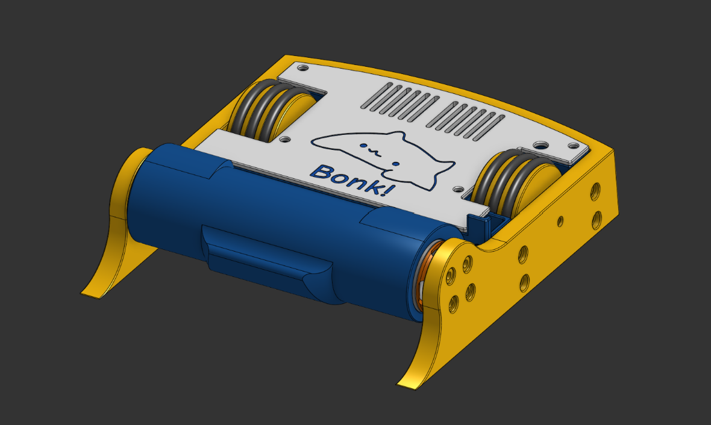
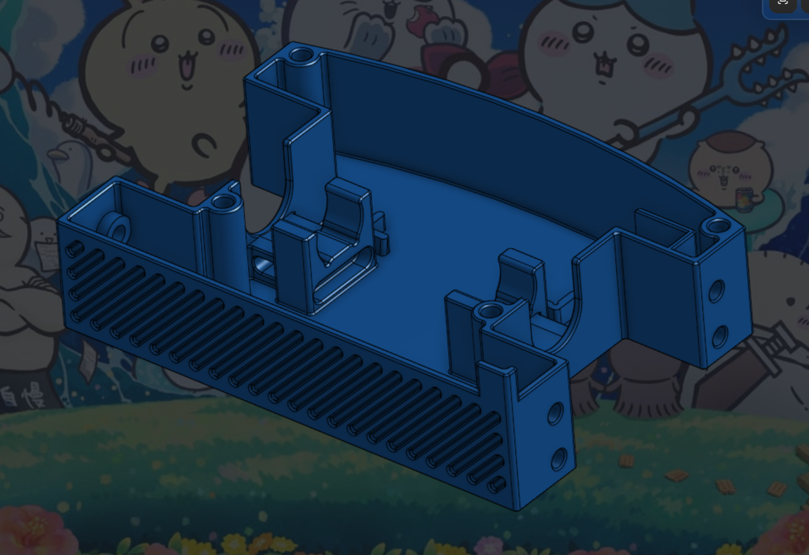
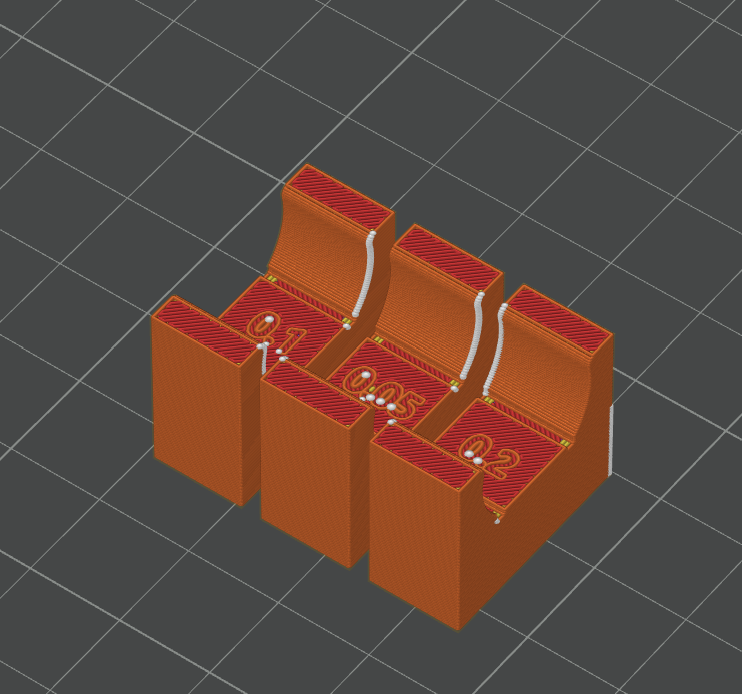
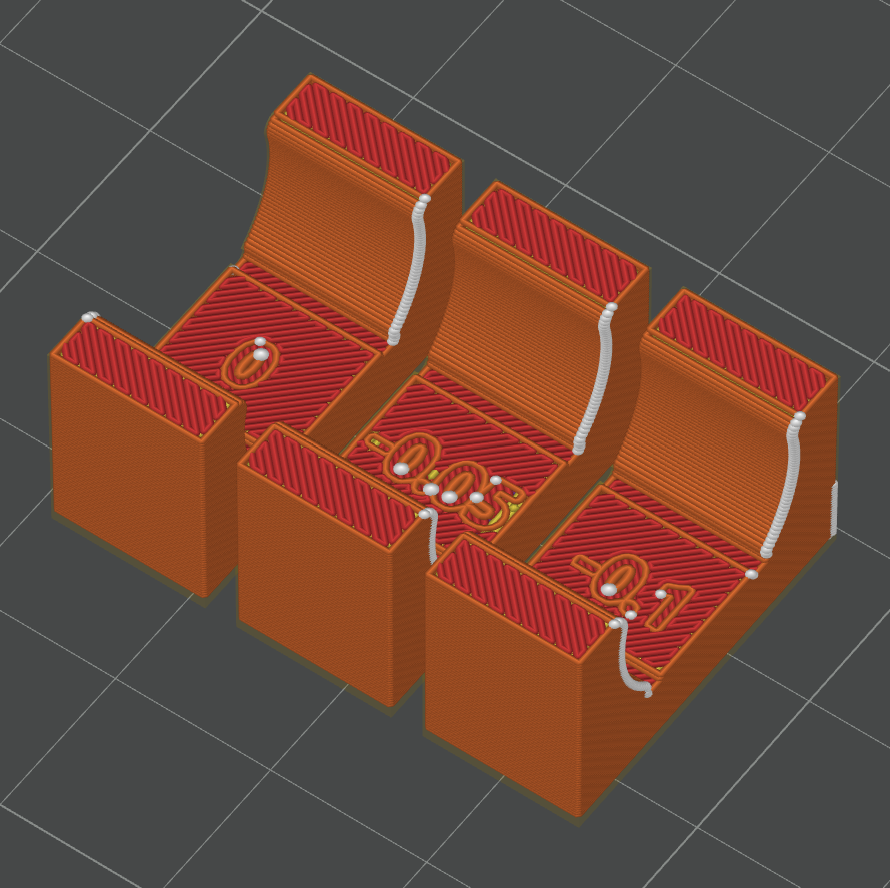
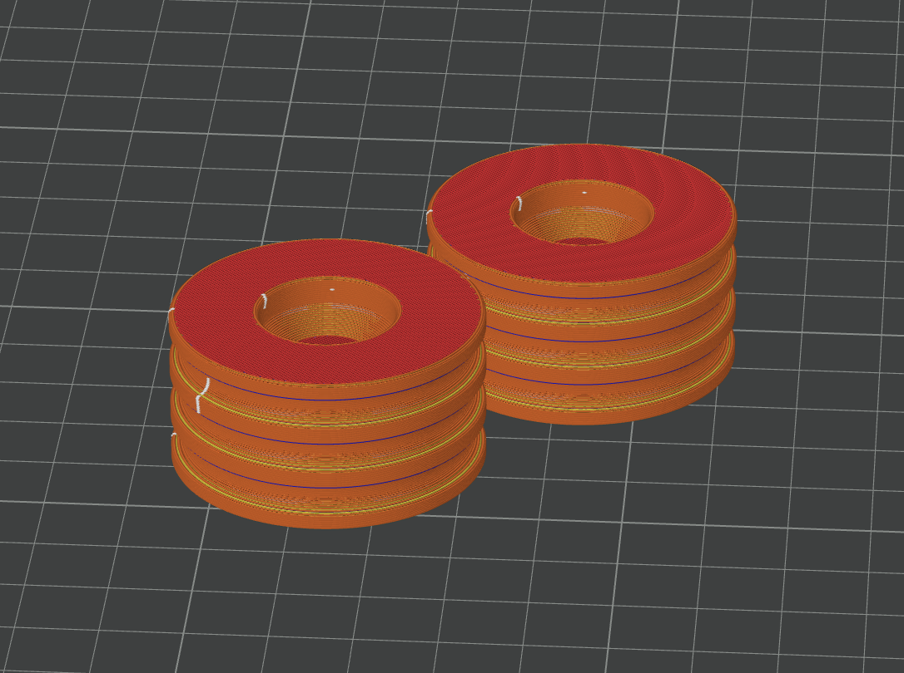
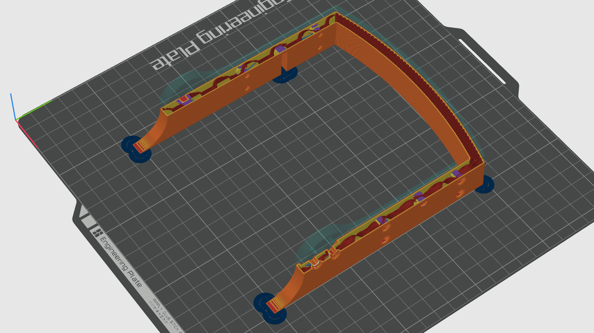
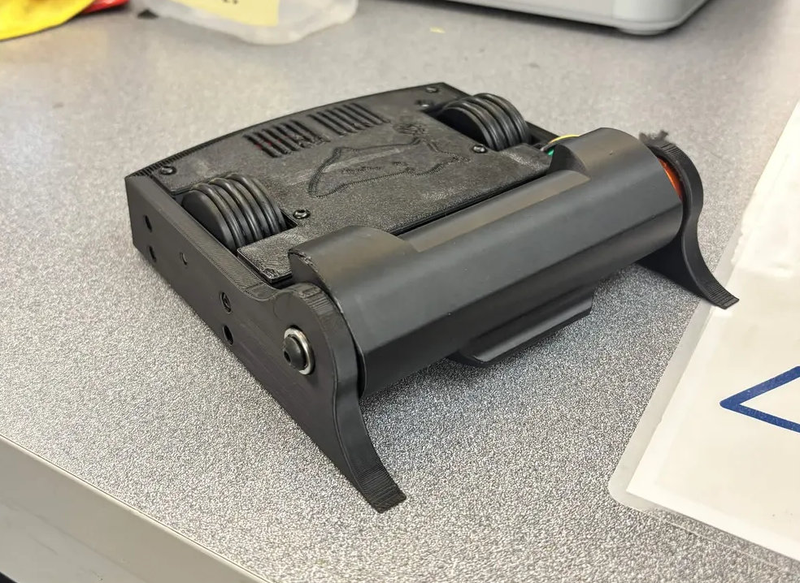
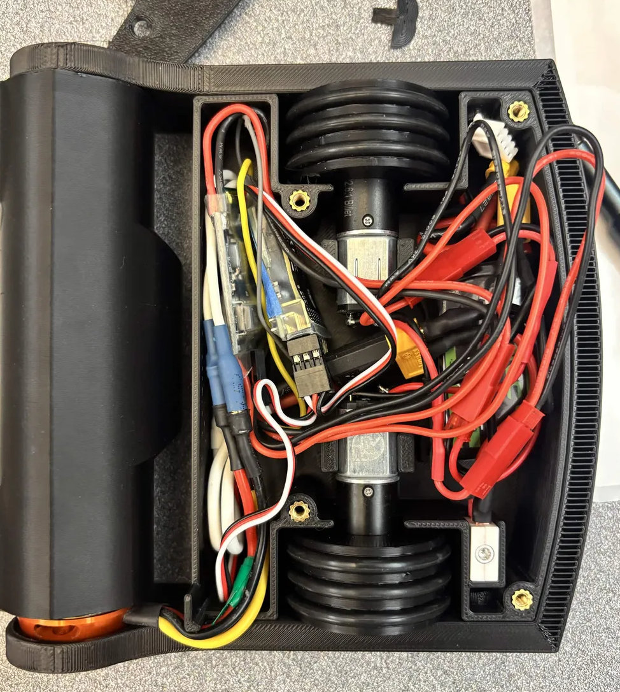

HCR Team 2 Robot
1 lb antweight drum spinner · Design Engineer · Oct 2026 – Present
A 1 lb (454 g) antweight combat robot with a 3D-printed chassis, two-wheel differential drive, and a front-mounted spinning drum weapon.
The design was driven by the competition rules:
- Weight: 454 g maximum.
- Materials: the chassis and weapon can only be PET, PETG, ABS, ASA, PLA, or PLA+. Metal parts such as motors and fasteners can't be used to add strength or armor.
- Weapon speed: anything that spins more than 360° is limited to a 20 ft/s tip speed.
- Braking: the weapon must come to a full stop within 60 s of power being removed, using an onboard brake.
- Radio: 2.4 GHz control, with a failsafe that stops all drive and weapon motion if the signal is lost.

The drivebase is the robot's main structure. It holds the drive motors, battery, receiver, speed controllers, and other electronics, and provides mounting points for the armor and weapon.
It is a 3D-printed shell, 126 mm long, 90 mm wide, and 28 mm tall, with 2 mm walls that keep it light while staying stiff enough for the internals. A ribbed pocket at the front and pocketed drive motor mounts save weight.
Twelve M3 heat-set inserts (4 mm × 5 mm) hold everything together: four on top for the roof, and four on each side for the armor.

Two Repeat Robotics 16 mm Brushed Planetary Motor MK2s each drive one wheel. Running them at different speeds and directions steers the robot (differential drive).
Motor mounting
The motors are held in custom printed clamps instead of their own mounting holes. The small M2 screw heads could pull through the plastic under impacts or vibration. The clamps spread the load over more of the motor housing and let the motors snap in and out without hardware.
I printed several test mounts to find the right interference fit and settled on −0.1 mm. Too much interference could crack the clamp or damage the motor, and too little would let the motor shift during a match.
Speed & tractive force
The motors were chosen for enough torque to accelerate and push while keeping a reasonable top speed for the weight class.
Each motor is rated for 1,220 RPM free speed at 12 V and 1,187 g·cm (0.1164 N·m) stall torque. At the battery's 11.1 V nominal voltage, free speed drops to about 1,128.5 RPM.
With 42 mm wheels, the theoretical top speed is 2.68 m/s at 12 V and 2.48 m/s at 11.1 V. These ignore drivetrain losses and wheel slip, so they are upper limits rather than measured speeds.
Together the motors give about 0.2328 N·m of stall torque, or a theoretical 11.1 N of tractive force. That is the peak force at stall, not a continuous pushing force.
Torque & power curve
I generated a torque and power curve from 100 points between 0 and 1,220 RPM, assuming torque falls linearly from stall to zero at free speed, with power = torque × angular velocity. It predicts a peak of about 3.72 W per motor at roughly half of free speed, before electrical and mechanical losses. I used the curve to judge the tradeoff between wheel speed and available pushing force.


| DRIVE SPEC | VALUE |
|---|---|
| Motor | Repeat Robotics 16 mm Brushed Planetary MK2 (×2) |
| Free speed | 1,220 RPM @ 12 V · 1,128.5 RPM @ 11.1 V |
| Stall torque | 0.1164 N·m per motor |
| Top speed (theoretical) | 2.48 m/s @ 11.1 V |
| Stall tractive force | 11.1 N combined |
| Peak power | 3.72 W per motor |
The wheels have a 3D-printed PETG core, 38.5 mm across and 20 mm wide, with three grooves (up to 1.85 mm radius) that hold O-rings for traction. With the O-rings installed, the wheel is 42 mm across, which stretches the rings about 5%, the amount recommended for a permanent fit.
A 16.7 mm hub with a 3.15 mm D-bore mounts the wheel on the motor shaft. Inside, the wheel uses its own internal rib geometry for strength and low weight instead of relying on the slicer's infill pattern.

The armor protects the internals and gives the weapon a rigid mount. It is 9 mm thick with a 3° draft on the outside, so the bottom is wider than the top. That makes it harder for an opposing vertical spinner to catch underneath the robot.
Eight screws fasten the armor to the drivebase through the side heat-set inserts. The weapon is supported by a bearing in the armor on one side and a four-hole motor mount on the other.
The armor is printed in PETG for toughness and ease of printing. Most of it uses low infill so it can flex and absorb hits, while the weapon mounting holes and front forks are printed at 100% infill. The rear uses a rib infill that acts as a crumple zone to protect the battery. The armor weighs about 55 g, under its 60 g budget.

The weapon is a custom spinning drum, 52 mm across with 4 mm walls and a mass of about 80 g. Teeth on the outside let it bite into opponents. It is printed in PLA, which is hard enough to deliver a strong hit without deforming.
The drum keeps the weapon compact within the chassis footprint. One side is press-fit onto the motor and the other rides on a bearing in the armor, which reduces shaft deflection and stiffens the assembly.
Weapon motor
The drum is driven by a FLASH HOBBY D2822 2600KV brushless outrunner (about 46 g). At 11.1 V its theoretical unloaded speed is 2600 × 11.1 = 28,860 RPM, far above what the rules allow, so the brushless ESC has to limit speed and brake the weapon to a stop within 60 s.
Tip-speed limit
For the 52 mm drum at 2,200 RPM, the tip speed is about 19.6 ft/s, just under the 20 ft/s limit. The final number should be confirmed with the measured operating RPM.
Battery
A Tattu 3S LiPo (11.1 V, 450 mAh, 75C) powers the drive motors, weapon, and electronics. It measures 51 × 26 × 14 mm, weighs about 32 g, and connects to the robot's switch through an XT30 connector.
Speed controllers
The drive motors run on a YoungRC 30A brushed ESC with braking. The weapon uses a separate brushless ESC configured for speed limiting and braking.
| COMPONENT | DETAIL |
|---|---|
| Battery | Tattu 3S LiPo, 11.1 V, 450 mAh, 75C, XT30, ~32 g |
| Energy | 4.995 Wh |
| Max discharge | 33.75 A |
| Drive ESC | YoungRC 30A brushed, with brake |
| Weapon motor | FLASH HOBBY D2822 2600KV brushless, ~46 g |
| Power switch | FingerTech switch |
R1-3 · R1-4
- Added an indent at the motor for extra wiring clearance from the weapon
- Switched armor hardware to readily available button-head screws
- Added material around chassis screws after a simple tear-out check
R1-5 · Parametric CAD
- Added ride-height and O-ring thickness variables, and made armor and wheel OD changes update without breaking the model
- Made robot width depend on track width and wheel width
- Added a sketch to check that the wheels still touch the ground when the robot is flipped
- Shortened the weapon claws from 10 mm to 7 mm and added the FingerTech switch with an access hole
R1-6 · Weapon & hardware rework
- Moved the weapon bearing into the armor and had the mounting screw thread into the drum for rigidity
- Replaced all M4 hardware with M3 screws in heat-set inserts instead of threading into plastic
- Set armor thickness to 9 mm and added the draft against vertical spinners
- Changed to 3.5 mm O-rings for availability and tied O-ring spacing to wheel width
R1-7 · R1-8
- Added a shield so weapon motor wires can't get caught in the drum
- Raised chassis height from 25 mm to 28 mm and added ribs around the drive shaft bores
- Increased wheel OD to 41 mm, then 42 mm, for about 5% O-ring stretch
- Tuned the motor fit so the drive motors snap into place, and added a front grill that saves 1.5 g
R1-9
- Lengthened the chassis slightly to fit the electronics
- Pocketed the motor mounts, tightened the heat-set insert holes, and tightened the motor bore in the weapon
First test print
The first full print drove well, and the O-ring wheels gripped the floor. It also showed what to fix next:
- Electronics barely fit
- The armor flexes inward slightly and needs a spacer so it doesn't rub
- The weapon bearing sticks out too far and needs an undercut
- The weapon needs a lock
- The drive motors can still slide, so the shafts need spacers
- The battery mount might need to move higher

